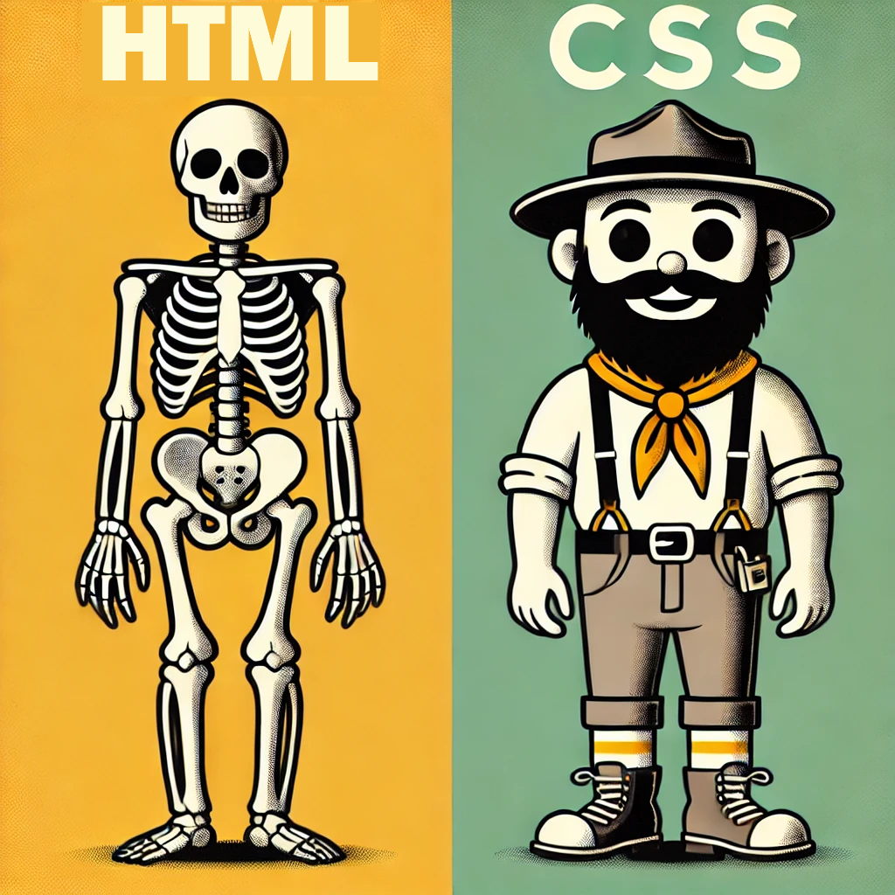
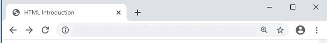
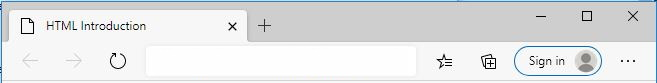

Web pages are created using an language called Hyper Text Markup Language (HTML). The current version of HTML is known as HTML5.
The HTML5 Specification is a great reference for everything about HTML. You may want to visit this site after completing this introduction.
For a more general (and complete) introduction to HTML visit W3 Schools.
The The World Wide Web Consortium (W3C) promotes web standards. Visit this site for the latest news and trends related to HTML and web technologies.
A web page is simply a text file with formatting codes called tags. A text editor such as Notepad can be used to create the page. Pages are saved in text format with a file name extension of either .htm or .html. A web browser is used to display or render the html.
There are many tools avaialble for creating web pages. Essentially you only need a text editor and a web browser to create and view web pages locally on your laptop or desktop.
Note: All of the following software options are free and can be used to create web pages. Some offer additional features/services for a fee, but are not needed for our course assignments.
Cloud editors (no-installation, work well for both Mac and Windows) include:
Local laptop/desktop text editors include:
Note: While the built in text editors Notepad (Windows) and Textedit (Macintosh) can be used to create web pages they do not offer syntax highlighting.
Current web browsers include:
Each browser and may render a page slightly differently, thus it is important to test your pages with multiple browsers. This also applies to browser versions as well.
The basic process of creating a web page involves three steps
Each HTML page uses the following basic structure
<html>
<head>
<title>Web Page Title</title>
</head>
<body>
</body>
</html>
HTML documents use <tags> to describe the structure and content for a document. A <tag> has a name and is surrounded by less than < and greater than > signs. An ending tag is the same as the beginning tag except that it contains a back slash ie. </tag>.
Most HTML tags will have both a <beginning> and </ending> tag although their are a few exceptions that only have a beginning tag. Some ending tags are optional.
An HTML document begins with the <html> tag and ends with </html>
Content (text and tags) are placed between the <body> tags. Set-up information including <title> tag is placed in the <head> section.
An HTML page adds additional set-up information to the basic page. This additional information gives the web browswer additional help to render the web page correctly. DOCTYPE html tells the browswer that the document is HTML5 format and lang="en" specifies that English is the language.
When starting a web page you should copy and paste template code similiar code(index.html) shown below as a starting point.
<!DOCTYPE html>
<html lang="en">
<head>
<title>Untitled</title>
</head>
<body>
</body>
</html>
A key concept is HTML specifies the content and structure for web pages. A different language, called CSS specifies the formatting. As you create HTML pages focus first on the content and structure, then apply formatting with CSS.
It is considered best practice to separate the structure and formatting.
The <title> tag controls the text that appears at the top of the web browser. The title is placed in the the <head> section of your web page. The title should describe the content of the page.
<head>
<title>HTML Introduction</title>
</head>
Title viewed with Chrome using Windows 10
Title viewed with Microsoft Edge using Windows 10
Headings are used to denote sections of a document. Valid heading sizes are <h1> to <h6>.
<h1>heading size one</h1>
<h2>heading size two</h2>
<h3>heading size three</h3>
<h4>heading size four</h4>
<h5>heading size five</h5>
<h6>heading size six</h6>
Headings are rendered as follows.
Headings are used to create the document structure. An H1 tag generally denotes the main heading or title for the web page. H2 tags denote the main sections of the document. h2 tags are used for sub sections. Sub sections beyond h2 are often not needed.
The paragraph tag <p> is used to denote sections of text. A tag should be used to start each new paragraph. A blank line is automatically inserted between each paragraph.
HTML works differently than a word processor. Extra blank lines and spaces are ignored.
The break tag <br> can be used within a paragraph to advance to the next line without adding an extra blank line.
<p>one
two three</p>
<p>four
five</p>
<p>This is a paragraph that has
a break here<br> and a break
here<br> and this
is the last line</p>
The code for the first and second paragraphs appear on one line, but when rendered they contain a blank line between each paragraph.
The last paragraph contains two breaks which forces the text to appear on the next line each time it encounters the break tag. Notice that break advances to the next line without "skipping" a line.
one two three
four five
This is a paragraph that has
a break here
and a break
here
and this
is the last line
The strong tag <strong> is used to denote importance, seriousness, or urgency for its contents. By default a web browswer will usually display the text in bold.
The emphasis tag <em> is used to denote emphasis. By default the web browswer will usually display the text in italics.
This <strong>word</strong> uses the strong tag. This <em>word</em> uses the em tag.
This word uses the strong tag. This word uses the em tag.
The strong and em tags are generally recommended over bold (b) and italics (i) tags as they are more descriptive for the content.
Tags for bold<b>, italics <i>, and underline <u> are also provided, however, they should generally be handled with CSS.
Unordered lists use the <ul> tag. Ordered lists use the <ol> tag. List items are denoted using the <li> tag.
<ul>
<li>item one</li>
<li>item two</li>
<li>item three</li>
</ul>
<ol>
<li>item one</li>
<li>item two</li>
<li>item three</li>
</ol>
Unordered lists are rendered with bullets by default.
Ordered lists are rendered using numbers 1, 2, 3, etc... by default.
Web links are created using the <a> tag which stands for "anchor".
A web link contains an attribute called "href" which stands for horizontal reference i.e. web link.
<a href="http://www.huntington.edu">Huntington University</a>
The text between the <a> and </a> tag is displayed when rendered.
Clicking on the link will cause the web browser to open the web page specified by the href tag.
To create a link to another page use the page name rather than a web link.
<a href="css_intro.html">CSS Intro</a>
Clicking on the link opens the CSS Intro web page.
Images are inserted using the <img> tag.
The src attribute specifies the name of the file. Each image is a separate file.
The alt tag specifies the text that will be displayed if the image is not found or there is a problem loading the image.
There is no ending tag.
<img src="hulogo.jpg" alt="Huntington University Logo">
The image will be displayed. Don't forget the quotation marks.
If there was an error loading the image, the alt text should be displayed

The width and height attributes can be used to resize the image. It is often best to only specify one of the tags so that the image will scale correctly
<img src="hulogo.jpg" width="200">
The following image will have a width of 200 pixels.
To ensure your HTML is correct you should "Validate" or "check" your HTML at http://validator.w3.org/. Validating your HTML will help to ensure all browsers will render your pages correctly and efficiently. Your HTML code should not have any warnings or errors. Fix the first error (or two) and then retry the validator. The number of errors reported is not accurate.